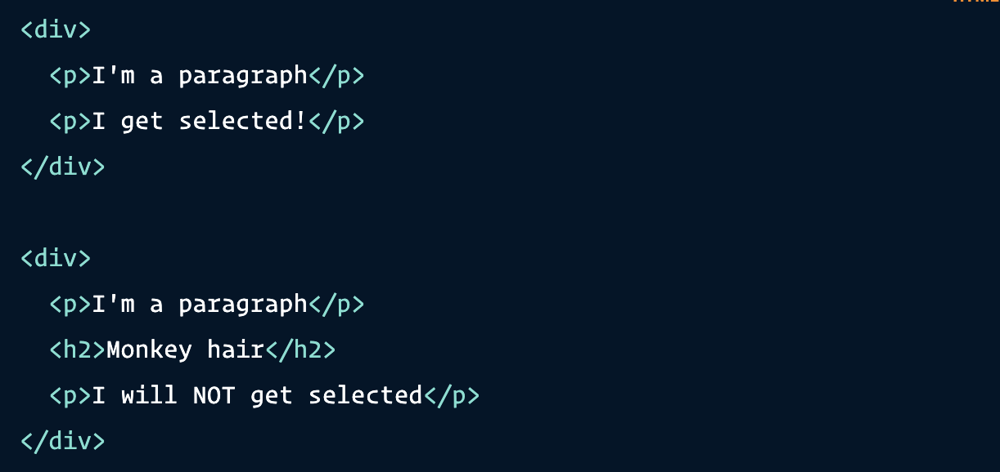

Onderstaand voobeeld weergeeft een adjacent selector
De adjacent sibling selector in CSS is opzichzelf niet een selector, maar een manier
om twee selectors te combineren.

De plus teken (+) is de adjacent sibling combinator, tussen de twee paragraaf tag (elementen) selectors. Dit houdt het volgende in; "selecteer elke paragraaf tag dat direct daarna komt zonder dat er iets tussen zit. Enkele voorbeelden hoe het eruit komt te zien"
HTML structuur met de bovenstaande style Dit is een paragraaf
Ik word geselecteerd
Ik ben een paragraaf
Ik word niet geselecteerd
Dit is erg handig wanneer je gebruik maakt van semantische markup (HTML) en en in bepaalde scenarios kleine aanpassingen wilt aanbrengen op elementen die direct naast elkaar staan.
Terug naar Opdracht 6